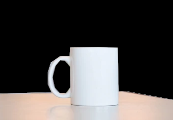

Imagination
Close your eyes and imagine a mug on a table. What do you “actually” perceive in your head?
Somewhat normal are the two following images. Usually with focused mind, the image becomes more clear.

When the image is very clear even without high mind concentration, then you have Hyperphantasia (2.6% of people). If you do not perceive nothing but darkness, then you have Aphantasia (0.7% of people).
There is also a difference in ability to place objects into the real world – some people have the mental image disconnected from the real image, some can put them together. Some people visualize in words.
Other senses have similar imagining ability. A notable one is hearing. One is placed on a scale from being able to perceive imagined sound to not hearing anything other than real sounds.